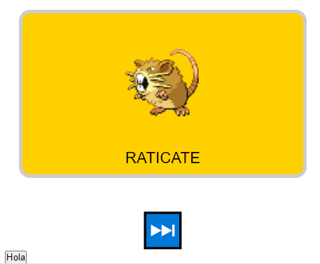
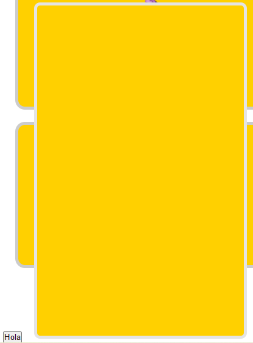

No tengo ni idea de como hacer esto, la verdad a pesar de haber leido la documentación no se como puedo consumir la API.
Bueno, creo que con el pasar del tiempo los problemas se irán solucionando.
Logré realizar la activdad de la puesta en escena de los pokemones, sin embargo, tube que necesitar ayuda de diversos tutoriales de YouTube. A pesar de que le dí bajo mi percepción una estetica de tarjetas bastante curiosas con algo de css a los pokemones; siento que no estoy haciendo las cosas bien. Tuve que ver tutoriales de algo que se supone ya debo de saber.
Tarde varios días más en buscar ayuda por mi orgullo, no lo había hecho antes aunque mis búsquedas y lineas de código fuesen practicamente inservibles frente a los objetivos que tenía al principio, quería hacerlo yo solo. Es que desde las personas con experiencia se ve tan simple.
Espero algún día llegar a ese punto de sabiduría.
Hoy no hice practicamente nada, quiero que al dar click en un pokemon se despliegue una tabCard que me permita ver el pokemon desde diversos angulos, ya que la api me permite imprimir varias fotos del mismo pokemon.
Logré crear un boton que muestre la tabCard, sin embargo, el resultado no me dejo muy satisfecho ya que tarde casi cuatro horas en realizarlo. Lo borraré y empezaré de nuevo. elc boton para mostrar la tabcard esta fuera de la grid ya que al insertarla en los pokemones no funciona.
Quiero el boton este en las tarjetas y que al dar click en el boton que dice hola se despliegue algo así
Y que dicho componente tenga una tab galery con varias imagenes de un mismo pokemon